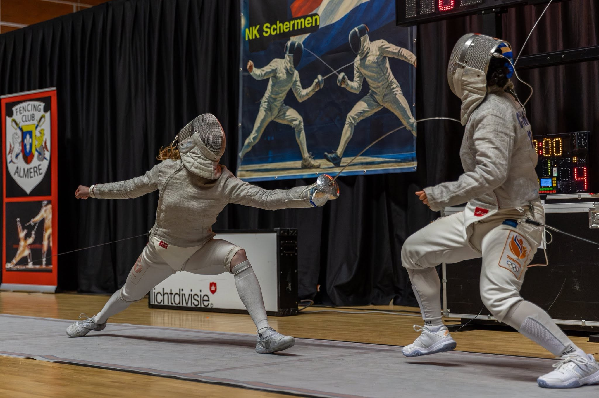

Actiebeeld 1
Deze pagina beheert de beeldbank voor de website. Je kunt hieronder direct zien waar je schermfoto's, bestuursfoto's en overige visuals moet plaatsen.
| Map | Doel |
|---|---|
| assets/images/screens | Algemene schermfoto's, sfeerbeelden, banners. |
| assets/images/board/roeland-reesinck | Bestuursfoto's Roeland Reesinck. |
| assets/images/board/remco-middelveld | Bestuursfoto's Remco Middelveld. |
| assets/images/board/patrice-masson | Bestuursfoto's Patrice Masson. |
| assets/images/board/jan-willem-lammers | Bestuursfoto's Jan-Willem Lammers. |
| assets/images/board/claudia-bokel | Bestuursfoto's Claudia Bokel. |
| assets/images/placeholders | Tijdelijke afbeeldingen zolang echte foto's ontbreken. |
Actiebeeld 1

Actiebeeld 2

Actiebeeld 3

Actiebeeld 4

Actiebeeld 5

Actiebeeld 6

Actiebeeld 7

Actiebeeld 8

Actiebeeld 9

Actiebeeld 10

Placeholder bestuursfoto